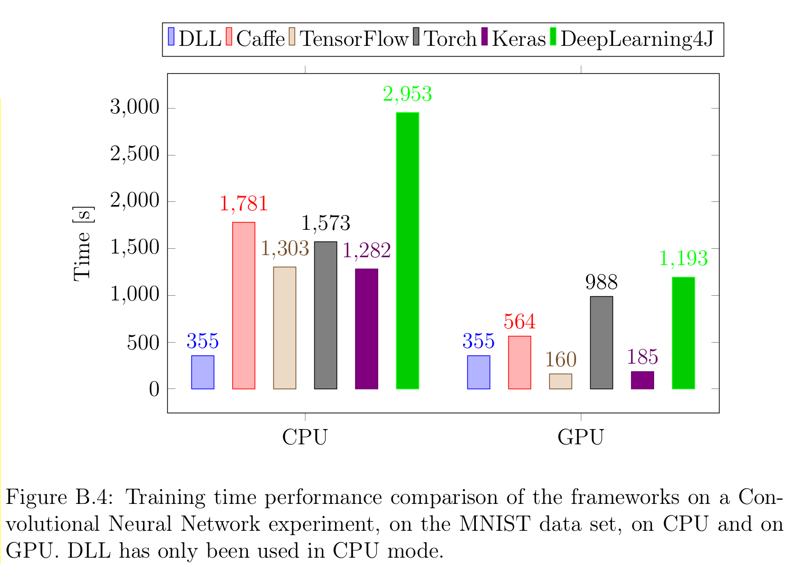

Update on Deep Learning Library (DLL): Dropout, Batch Normalization, Adaptive Learning Rates, ...
It's been a while since I've posted something on this, especially since I had one month vacation. This year I've been able to integrate a great number of changes into my Deep Learning Library (DLL) project. It has seen a lot of refactorings and a lot of new features making it look like a real neural network library now. In this post, I'll try to outline the last new features and changes of the library.
For those that don't know, DLL is a library for neural network training, written in C++ and for C++. You can train Fully-Connected Neural Networks and Convolutional Neural Networks. The focus of the framework is on speed and easy use in C++.
As for my ETL project and again thanks to my thesis supervisor, the project now has a logo:
Adaptive Learning Rates
Before, the framework only supported simple SGD and Momentum updates for the different parameters of the network. Moreover, it was not very well extendable. Therefore, I reviewed the system to be able to configure an optimizer for each network to train. Once that was done, the first thing I did was to add support for Nesterov Accelerated Gradients (NAG) as a third optimizer. After this, I realized it was then easy to integrate support for more advanced optimizers including support for adaptive learning rates. This means that the learning rate will be adapted for each parameter depending on what the network is learning. Some of the optimizers even don't need any learning rate. So far, I've implemented support for the following optimizers: Adagrad, RMSProp, Adam (with and without bias correction), Adamax (Adam with infinite norm), Nadam (Adam with Nesterov momentum) and Adadelta (no more learning rate). The user can now choose the optimizer of its choice, for instance NADAM, as a parameter of the network:
// Use a Nadam optimizer dll::updater<dll::updater_type::NADAM>
Another improvement in the same domain is that the learning rate can also be decayed over time automatically by the optimizer.
If you want more information on the different optimizers, you can have a look at this very good article: An overview of gradient descent optimization algorithms from Sebastian Ruder.
Better loss support
Before, DLL was automatically using Categorical Cross Entropy Loss, but it was not possible to change it and it was not even possible to see the loss over time. Now, the current value of the loss is displayed after each epoch of training and the loss used for training is now configurable. So far, only three different losses are supported, but it it not difficult to add new loss to the system. The three losses supported are: Categorical Cross Entropy Loss, Binary Cross Entropy Loss and Mean Squared Error Loss.
Again, each network can specify the loss to use:
// Use a Binary Cross Entropy Loss dll::loss<dll::loss_function::BINARY_CROSS_ENTROPY>
Dropout
Dropout is a relatively new technique for neural network training. This is especially made to reduce overfitting since a large number of sub networks will be trained and it should prevent co-adaptation between different neurons. This technique is relatively simple. Indeed, it simply randomly sets to zero some of the input neurons of layers. At each batch, a new mask will be used and this should lead to a large number of sub networks being trained.
Here is example of a MLP with Dropout (p=0.5):
using network_t = dll::dyn_dbn_desc< dll::dbn_layers< dll::dense_desc<28 * 28, 500>::layer_t, dll::dropout_layer_desc<50>::layer_t, dll::dense_desc<500, 250>::layer_t, dll::dropout_layer_desc<50>::layer_t, dll::dense_desc<250, 10, dll::activation<dll::function::SOFTMAX>>::layer_t> , dll::updater<dll::updater_type::MOMENTUM> // Momentum , dll::batch_size<100> // The mini-batch size , dll::shuffle // Shuffle before each epoch >::dbn_t;
Batch Normalization
Batch Normalization is another new technique for training neural networks. This technique will ensure that each of the layer will receive inputs that look kind of similar. This is a very large advantage since then you reduce the different in impact of hyper parameters on different layers. Google reported much faster training with this technique by getting rid of Dropout and by increasing the learning rate of training.
Here is an example of using Batch Normalization in a CNN:
using network_t = dll::dyn_dbn_desc< dll::dbn_layers< dll::conv_desc<1, 28, 28, 8, 5, 5>::layer_t, dll::batch_normalization_layer_4d_desc<8, 24, 24>::layer_t, dll::mp_layer_2d_desc<8, 24, 24, 2, 2>::layer_t, dll::conv_desc<8, 12, 12, 8, 5, 5>::layer_t, dll::batch_normalization_layer_4d_desc<8, 8, 8>::layer_t, dll::mp_layer_2d_desc<8, 8, 8, 2, 2>::layer_t, dll::dense_desc<8 * 4 * 4, 150>::layer_t, dll::batch_normalization_layer_2d_desc<150>::layer_t, dll::dense_desc<150, 10, dll::activation<dll::function::SOFTMAX>>::layer_t> , dll::updater<dll::updater_type::ADADELTA> // Adadelta , dll::batch_size<100> // The mini-batch size , dll::shuffle // Shuffle the dataset before each epoch >::dbn_t;
You may notice that the layer is set as 4D so should only be used after convolutional layer (or after the input). If you want to use it after fully-connected layers, you can use the 2D version that works the same way.
Better dataset support
At the beginning, I designed DLL so that the user could directly pass data for training in the form of STL Containers such as the std::vector. This is good in some cases, but in some cases, the user does not know how to read the data , or does not want to be bothered with it. Therefore, several data sets reader are now available. Moreover, the entire system has been reworked to use generators for data. A generator is simply a concept that has some data to produce. The advantage of this new system is data augmentation is now supported every where and much more efficiently than before. It is now possible to perform random cropping and mirroring of images for instance. Moreover, the data augmentation can be done in a secondary thread so as to be sure that there is always enough data available for the training.
The library now has a powerful dataset reader for both MNIST and CIFAR-10 and the reader for ImageNet is almost ready. The project has already been used and tested with these three datasets now. Moreover, the support for directly passing STL containers has been maintained. In this case, a generator is simply created around the data provided in the container and the generator is then passed to the system for training.
Here for instance is how to read MNIST data and scale (divide) all pixel values by 255:
// Load the dataset auto dataset = dll::make_mnist_dataset(0, dll::batch_size<100>{}, dll::scale_pre<255>{}); dataset.display(); // Train the network net->fine_tune(dataset.train(), 25); // Test the network net->evaluate(dataset.test());
Much faster performance
I've spent quite a lot of time improving the performance of the framework. I've focused on every part of training in order to make training of neural networks as fast as possible. I've also made a comparison of the framework against several popular machine learning framework (Caffe, TensorFlow, Keras, Torch and DeepLearning4J). For instance, here are the results on a small CNN experiment on MNIST with all the different frameworks in CPU mode and in GPU mode:
As you can see, DLL is by far the fastest framework on CPU. On GPU, there is still some work to be done, but this is already ongoing (although a lot of work remains). This is confirmed on each of the four experiments performed on MNIST, CIFAR-10 and ImageNet, although the margin is smaller for larger networks (still about 40% faster than TensorFlow and Keras which are the fastest framework after DLL on CPU on my tests).
Overall, DLL is between 2 and 4 times faster than before and is always the fastest framework for neural network training when training is performed on CPU.
I proposed a talk about these optimizations and performance for Meeting C++ this year, but it has unfortunately not been accepted. We also have submitted a publication about the framework to a conference later this year.
Examples
The project now has a few examples (available here), well-designed and I try to update them with the latest updates of the framework.
For instance, here is the CNN example for MNIST (without includes):
int main(int /*argc*/, char* /*argv*/ []) { // Load the dataset auto dataset = dll::make_mnist_dataset(0, dll::batch_size<100>{}, dll::scale_pre<255>{}); // Build the network using network_t = dll::dyn_dbn_desc< dll::dbn_layers< dll::conv_desc<1, 28, 28, 8, 5, 5>::layer_t, dll::mp_layer_2d_desc<8, 24, 24, 2, 2>::layer_t, dll::conv_desc<8, 12, 12, 8, 5, 5>::layer_t, dll::mp_layer_2d_desc<8, 8, 8, 2, 2>::layer_t, dll::dense_desc<8 * 4 * 4, 150>::layer_t, dll::dense_desc<150, 10, dll::activation<dll::function::SOFTMAX>>::layer_t> , dll::updater<dll::updater_type::MOMENTUM> // Momentum , dll::batch_size<100> // The mini-batch size , dll::shuffle // Shuffle the dataset before each epoch >::dbn_t; auto net = std::make_unique<network_t>(); net->learning_rate = 0.1; // Display the network and dataset net->display(); dataset.display(); // Train the network net->fine_tune(dataset.train(), 25); // Test the network on test set net->evaluate(dataset.test()); return 0; }
Reproducible results
And last, but maybe not least, I've finally united all the random number generation code. This means that DLL can now set a global seed and that two training of the same network and data with the same seed will now produce exactly the same result.
The usage is extremely simple:
dll::set_seed(42);
Conclusion
After all these changes, I truly feel that the library is now in a much better state and could be useful in several projects. I hope that this will be useful to some more people. Moreover, as you can see by the performance results, the framework is now extremely efficient at training neural networks on CPU.
If you want more information, you can consult the dll Github Repository. You can also add a comment to this post. If you find any problem on the project or have specific question or request, don't hesitate to open an issue on Github.
Comments
Comments powered by Disqus